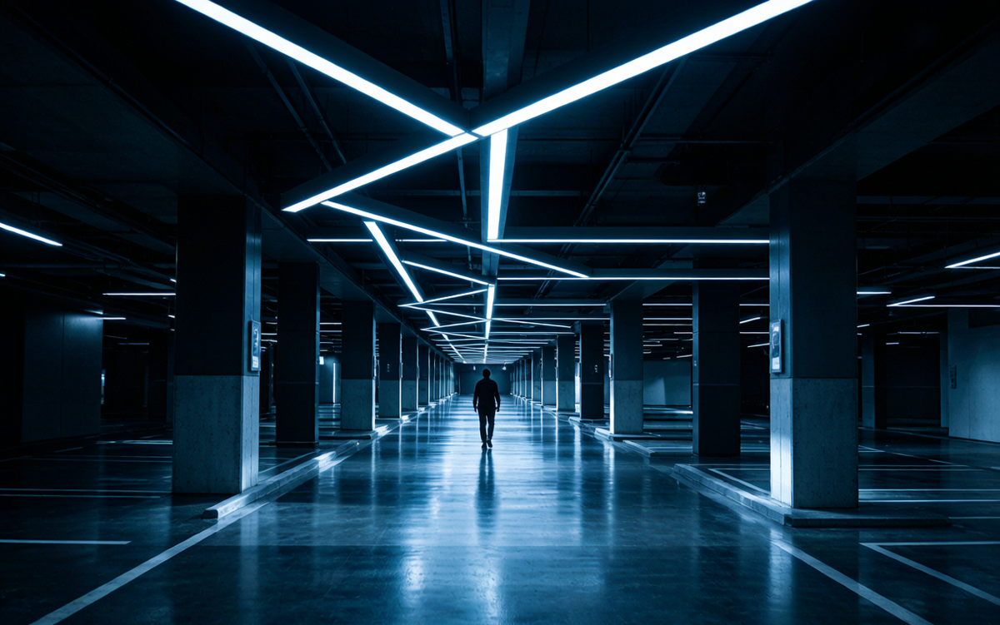

You know the feeling. You're walking to your car in an underground parking garage at 2 a.m., and the motion sensor finally wakes up — just as you're already standing at your door. Or worse: you sit perfectly still at your desk and the corridor light starts blinking because you're at the edge of the sensor's blind zone.
That's not bad luck. That's the factory default of traditional sensor lighting.
Why Traditional Sensor Lighting Hit a 50% Energy-Saving Ceiling
For the last decade, lighting energy savings came from two moves: swap to LEDs, and add infrared or radar motion switches. LEDs doubled efficiency. Motion switches added another 50%. Combined, you're at ~50% savings versus legacy lighting.
Then progress stopped. Because traditional sensor lighting is essentially decision-blind.
Its logic is one line: detect motion → turn on full. No motion → dim or off. It doesn't know which direction you're heading. It doesn't know if there's someone else ahead. It doesn't know if it's 2 a.m. or 5 p.m. It doesn't even know if it's in a 100,000-square-meter mall or a 50-square-meter stairwell.
And it gets worse: the more sophisticated you make traditional smart lighting, the harder it becomes to install. Bus-based systems need wiring, programming, and certified commissioning. For mid-sized parking garage retrofits, system integration costs can easily exceed the cost of the luminaires themselves. Most electricians can't handle it. Even when they can, long-term reliability is shaky.
AI Self-Learning Lighting: Lights That Finally "Think"
The biggest change in lighting in 2026 isn't brighter LEDs or faster chips. It's that lights finally learned how to think.
What does it mean for a light to "think"? Here's a real example. In an underground parking garage deployed with AI lighting, at 2 a.m., a security guard walks in from the east entrance heading to the west-side electrical room for inspection.
Traditional sensor lighting: lights turn on only where he currently walks. Lights behind him shut off 30 seconds later.
AI self-learning lighting works like this:
Sensors detect entry at east gate → edge AI nodes identify this is a "person" within milliseconds, not a cat or falling leaf → the system pulls historical data and recognizes this time, this entrance usually corresponds to a "security patrol" → AI predicts the most likely route → all luminaires within 50 meters along that path pre-emptively ramp up to 100% → as the guard passes, lights behind him dim to 2 W standby, not fully off.
The entire detection-to-decision-to-execution cycle takes under 200 ms. And the system keeps learning. If the guard walks the same route for three nights in a row, by night four, AI's prediction accuracy is even higher. If one night he walks a different route, the system won't "freeze." It just won't pre-empt as precisely. But the light still works.
That's the core capability of decentralized mesh AI lighting in 2026.
Three Technical Weapons: Mesh + Deep Learning + Edge Computing
1. Decentralized Mesh: Intelligent Systems Without a "Brain"
Traditional smart lighting architecture is "star-shaped" — one central gateway manages hundreds of lights. Gateway dies, the whole system goes dark. Devices multiply, gateway compute saturates, latency spikes.
Decentralized architecture turns every light into an independent intelligent node. Each luminaire carries its own AI chip and sensors. Lights talk to neighbors via wireless mesh, self-organize, and self-coordinate. No single point of failure. Supports ten-thousand-node scale deployments.
Most importantly — installation is wire-free, programming-free, address-free. An ordinary electrician can swap fixtures in. Lights "introduce themselves" to neighbors automatically.
2. Deep Learning Dimming: From "Rules" to "Prediction"
Traditional sensor lighting runs if-then rules: if motion detected then turn on. That's 1980s logic.
AI lighting runs deep learning time-series prediction — the system analyzes multiple dimensions simultaneously: current people density, historical density patterns, ambient light trend, even weather and holiday data. It then predicts "how much light will this zone need in the next 30 seconds."
In real-world deployment at 13 Wanda Plaza locations, this predictive dimming delivered an additional 30-40% energy savings over traditional rule-based control.
3. Edge Computing: Decisions Must Happen Locally
Why not send everything to the cloud and let a super-AI decide?
Latency and privacy. Lighting control demands sub-200ms response. A cloud round-trip is 50-200ms minimum, plus network jitter. And nobody wants their movement patterns continuously uploaded to someone's server.
Edge AI runs inference on the local chip inside the luminaire. Data never leaves the light. The cloud only does two things: receive anonymized energy consumption statistics, and push model updates via OTA.
Real Numbers: 13 Wanda Plazas, ¥16.72M Saved in 6 Years
According to public 2026 data, one AI lighting specialist implemented a super-energy-saving lighting retrofit at 13 Wanda Plaza locations in the Shanghai region:
| Area | Solution | Annual Savings | Composite Rate |
|---|---|---|---|
| Public zones | 5.5W high-efficiency LED downlights | 105,000 kWh | — |
| Underground garage | AI self-learning tubes (avg 2.3W operation) | 128,000 kWh | 86% |
| Total | 233,000 kWh/year |
Over a 6-year contract period, cumulative savings reached 18.17 million kWh, saving approximately ¥16.72 million in electricity costs and reducing CO2 emissions by 6,736 tons.
These are not PPT projections. They're real meter readings.
What AI Lighting Demands From LED Drivers
AI self-learning lighting places three hard requirements on LED drivers:
Ultra-low standby power. Luminaires must run AI inference 24/7. Driver standby power must stay under 0.3W. Traditional "1W standby" designs explode total system standby consumption.
Wide-load high efficiency. AI dimming means luminaires often run at 10-30% low brightness for extended periods. Driver efficiency must stay above 85% across the full 5-100% load range. Otherwise efficiency gains at low brightness get eaten by driver losses.
Fast response + smooth dimming. AI requires the driver to transition from command to stable current output within 50ms, with a smooth step-less dimming curve. This demands high-frequency PWM (>4 kHz), not low-frequency dimming.
Conclusion: Lighting Industry Is Shifting From "Selling Lamps" to "Selling Energy Savings"
The most fundamental shift from AI self-learning lighting isn't the technology — it's the business model.
The lighting industry used to sell hardware: how much is a lamp, how many watts, how long does it last. Price wars drove margins to razor-thin.
AI lighting opens a different possibility: sell ongoing energy savings. Under Energy Management Contract (EMC) models, the customer invests nothing, and the vendor gets paid from the savings. The ¥16.72 million saved over 6 years at Wanda is proof that this model works.
For LED driver manufacturers, this means the core competitive advantage shifts from "how many watts, how low a price" to "can your driver support AI chip 24/7 inference, hold high efficiency across the full load range, and complete flicker-free dimming within 50ms."
The lights have learned to think. The supply chain needs to rethink too.
NEXLAMP — Smart Lighting Driver Power Supply Specialist
Tuya Zigbee smart lighting + full-protocol dimming drivers (TRIAC / 0-10V / DALI / Zigbee)
Mr. Liu +86 13825496855 | www.nexlamp.com